공조냉동기계산업기사 (2005-05-29 기출문제)
1과목: 공기조화
1. 습공기로부터 습기를 제거하는 방법으로 옳게 나열된 것은?
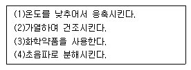
- (1) , (4)
- (1) , (3)
- (2) , (4)
- (3) , (4)
(정답률: 40%)

2. 풍량이 800m3/h인 공기를 건구온도 33℃,습구온도 27℃(h1 = 20.3㎉/㎏)의 상태에서 건구온도 16℃,상대습도 90%(h2 = 10.0㎉/㎏)상태까지 냉각할 경우 필요한 냉각 열량은 얼마인가? (단, 건공기의 비체적(ν)은 0.83[m3/㎏]이다.)
- 8,500[㎉/h]
- 9,200[㎉/h]
- 9,930[㎉/h]
- 12,000[㎉/h]
(정답률: 46%)
3. 실내의 현열부하가 8,640kcal/h이고, 잠열부하가 1,360kcal/h인 사무실을 26℃의 온도로 유지하려고 한다. 16℃의 냉풍을 공급하려면 실내로 취출하여야 할 송풍량은 몇 m3/h인가? (단, 공기의 정압비열은 0.24kcal/kg℃, 비중량은 1.2kg/m3으로 한다.)
- 3,000
- 3,472
- 3,600
- 4,167
(정답률: 30%)
4. 습공기의 수증기 분압과 그 온도에 있어서의 포화공기의 수증기 분압과의 비율을 무엇이라 하는가?
- 절대습도
- 상대습도
- 열수분비
- 비교습도
(정답률: 62%)
5. 다음은 변풍량 단일덕트 방식에 대한 설명이다. 적당하지 않은 것은?
- 변풍량유닛을 실별 또는 조운별로 배치함으로써 개별제어, 존제어가 가능하다.
- 부하변동에 따라서 실온을 유지하므로 열원설비용 에너지의 낭비가 적다.
- 송풍량의 감소에 따라 기류분포, 실내청정도의 유지에 어려움이 생길 우려가 있다.
- 풍량이 충분하고 안정되므로 부하특성이 거의 동일한 존에 있어서는 온·습도, 기류분포등이 안정적이다.
(정답률: 23%)
6. 다음 대류방열기(convector) 설명을 올바르게 나타낸 것은?
- 절(section)수를 가감할 수 있어 편리하다.
- 강제 대류식 방열기이다.
- 100℃ 이상의 온수를 주로 사용한다.
- 케이싱이 높을수록 굴뚝효과에 의해 방열량이 커진다.
(정답률: 38%)
7. 다음 난방 방식중에 중앙식의 공기방식에 속하는 것은?
- 팩케지 유니트(package unit)방식
- 복사 냉난방식
- 팬코일 유니트방식
- 2중 덕트방식
(정답률: 61%)
8. 다음중 VAV 시스템의 특징으로 적당한 것은?
- 에너지 손실이 크다.
- 저부하시에는 환기의 효율이 나쁘다.
- 혼합상자(Mixing box)를 설치해야 하며, 여기서 혼합손실이 발생한다.
- 냉방과 난방을 동시에 행하기에 적당하다.
(정답률: 32%)
9. 습공기에 대한 설명으로서 틀린 것은?
- 습공기는 온도가 높을수록 수증기를 많이 포함할 수 있다.
- 습공기가 최대한의 수증기를 포함할 때 포화 습공기라고 한다.
- 습공기 중의 수증기가 응축하기 시작하는 온도를 노점 온도라고 한다.
- 습공기 중에 미세한 물방울을 함유한 공기를 불포화 공기라고 한다.
(정답률: 56%)
10. 연도(煙道)는 보일러와 굴뚝을 접속하는 부분이다. 다음 설명 중 틀린 것은?
- 가스유속을 적당한 값으로 할 것
- 길이는 될 수 있는 한 길 것
- 굴곡부가 적어지도록 배치할 것
- 급격한 단면 변화를 피할 것
(정답률: 78%)
11. 다음과 같은 사무실에서 방열기 설치위치로 가장 적당한 것은?
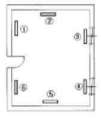
- ①, ②
- ②, ⑤
- ③, ④
- ④, ⑥
(정답률: 92%)
12. 고속덕트와 저속덕트는 주덕트 내에서 최대 풍속 몇 m/s를 경계로 하여 구별되는가?
- 5 m/s
- 15 m/s
- 30 m/s
- 55 m/s
(정답률: 82%)
13. 다음은 냉각 코일에 관한 사항이다. 적당한 것은?
- 대수 평균 온도(MTD)를 크게하면 코일의 열수가 많아져 불리하다.
- 냉수의 속도는 2㎧ 이상으로 하는 것이 바람직하다.
- 코일을 통과하는 풍속은 2 - 2.5㎧가 경제적이다.
- 코일의 열수가 많아 질수록 바이패스 팩터는 커진다.
(정답률: 73%)
14. 다음 중 공기-물 공기조화 방식은?
- 멀티존 유닛방식 (multizone unit system)
- 패키지 유닛방식 (package unit system)
- 유인 유닛방식 (induction unit system)
- 변풍량 이중덕트방식 (double duct variable air volume)
(정답률: 63%)
15. 에어 와셔에 대한 다음 설명 중 틀린 것은?
- 냉각, 가습, 감습이 가능하다.
- 통과풍속은 일반적으로 2-3m/s이다.
- 분사수온이 입구공기의 습구온도와 같은 경우 엔탈피변화는 없다.
- 분무 수압은 일반적으로 1.0㎏/cm2이하로 한다.
(정답률: 41%)
16. 다음에 표시한 습공기 선도상에 재열부하는 얼마인가? (단,송풍량은 10,000㎏/h이다.)
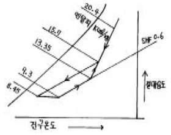
- 47,000㎉/h
- 23,500㎉/h
- 40,500㎉/h
- 8,500㎉/h
(정답률: 29%)
17. 환기방법 중 강제배기 하는 방식으로 부엌, 흡연실, 화장실 등에 사용하는 방식은?
- 제 1종 환기법
- 제 2종 환기법
- 제 3종 환기법
- 제 4종 환기법
(정답률: 68%)
18. 코일의 바이패스 팩터가 증가하는 요인 중 틀린 것은?
- 송풍량이 증가할 때
- 코일의 열수가 증가할 때
- 코일의 표면적이 감소할 때
- 코일의 튜브 간격이 증가할 때
(정답률: 43%)
19. 조용히 앉아 있는 성인 남자의 신체 표면적 1m2에서 1시간 동안에 발산하는 평균 열량으로 대사량을 나타내는 단위는?
- CIO
- MRT
- met
- CET
(정답률: 71%)
20. 온수난방 방식에 대한 설명 중 잘못된 것은?
- 단관식은 보일러에서 멀 수록 방열기의 온수온도가 내려간다.
- 역환수식(reverse return)은 모든 방열기에 동일한 온도의 온수를 균등하게 공급할 수 있다.
- 방열기의 방열량을 조절할 수 있다.
- 고 온수식은 배관이 굵어지고 방열기가 커진다.
(정답률: 58%)
2과목: 냉동공학
21. 다음 프레온계 냉매중 냉방용 터어보 냉동기에 적당한 냉매는 어느 것인가?
- R - 123
- R - 502
- R - 21
- R - 13
(정답률: 24%)
22. 만액식 증발기의 원통(셀)내의 냉매량은 어느 정도가 적당한가 ?
- 원통직경의 1/2
- 원통길이의 5/8
- 원통직경의 5/8
- 원통길이의 1/4
(정답률: 43%)
23. 증발기에서의 냉매의 변화에 대한 설명 중 잘못 설명한 것은?
- 등압변화이다.
- 등온변화이다.
- 내부에너지 변화량은 없다.
- 가해진 열량은 엔탈피 변화량과 같다.
(정답률: 50%)
24. 화학식 CF2Cl2의 냉매 번호는?
- R - 12
- R - 13
- R - 14
- R - 22
(정답률: 52%)
25. 방열벽을 통해 실외에서 실내로 열량 Q가 이동할 때, 실외측열전달계수 α1=20 kcal/m2h℃, 실내측열전달계수 α2=6kcal/m2h℃, 방열벽두께 0.2 m, 열전도도 λ=0.04 kcal/mh℃일 때 총괄열전달계수 K는 몇 kcal/m2h℃ 인가?
- 5.216
- 0.417
- 0.191
- 0.032
(정답률: 36%)
26. 이상 기체를 정압하에서 가열하면 체적과 온도의 변화는 어떻게 되는가?
- 체적증가, 온도상승
- 체적일정, 온도일정
- 체적증가, 온도일정
- 체적일정, 온도상승
(정답률: 80%)
27. 냉동기의 구조중 응축기가 하는 기능은 어느 것인가?
- 냉매를 보내는 심장부이다.
- 냉장고내의 열을 뺏는다.
- 냉장고 밖으로 열을 방출한다.
- 냉매액을 저장한다.
(정답률: 60%)
28. 내부에너지가 150㎉/㎏, 압력 2.5㎏/cm2,비체적 0.03m3/㎏일 때 엔탈피는 얼마인가?
- 155.07㎉/㎏
- 151.8㎉/㎏
- 148.2㎉/㎏
- 142.8㎉/㎏
(정답률: 39%)
29. 압력 8㎏/cm2abs,온도 100℃인 압축공기를 대기중으로 분출시킬 경우 이 변화가 단열적으로 이루어질 때 분출하는 공기의 온도는 약 몇 K인가? (단, 공기의 비열비는 1.4이다.)
- 197.5
- 207.7
- 242.4
- 353.4
(정답률: 37%)
30. 암모니아 냉동장치에서 토출압력이 올라가지 않는 이유는 무엇인가?
- 흡입변과 변좌간에 이물질이 끼었다.
- 냉매중에 공기가 섞여있기 때문이다.
- 응축기와 압축기를 순환하는 냉각수가 부족했기 때문이다.
- 장치내에 냉매가 과잉충진 되었기 때문이다.
(정답률: 46%)
31. 다음 냉매 중 에탄계 프레온족 이라고 할 수 없는 것은?
- R-22
- R-113
- R-123
- R-134a
(정답률: 47%)
32. 냉동장치의 운전에 대한 다음 설명중 옳지 않은 것은?
- 일반적으로 히트펌프 사이클의 성적계수는 냉동사이클의 성적계수보다 크다.
- 냉매의 과냉각도는 클수록 좋으므로 10℃ 이상이 되도록 한다.
- 증발기 출구의 냉매 과열도는 5∼10℃ 정도가 적당하며 온도자동팽창밸브를 사용하여 냉매유량을 조절할 수 있다.
- 팽창밸브의 교축팽창은 팽창밸브를 통한 냉매액이 압력 강하 할 때 액의 일부가 증발잠열에 의해 냉매자체의 온도가 내려가는 변화를 말한다.
(정답률: 63%)
33. 냉동장치에 있어서 응축기속에 공기가 들어 있음은 무엇을 보고 알수 있는가?
- 응축기 온도가 떨어진다.
- 응축기에서 소리가 난다.
- 저압측 압력이 보통보다 높다.
- 고압측 압력이 보통보다 높다.
(정답률: 48%)
34. 다음 중 팽창밸브의 종류가 아닌 것은?
- 온도식 자동팽창밸브
- 정압식 자동팽창밸브
- 정적식 자동팽창밸브
- 수동 팽창밸브
(정답률: 64%)
35. 다음 중 열역학 제 2 법칙과 관계 없는 것은?
- 열은 스스로 고온 물체로 부터 저온 물체로 이동되나 그 과정은 비가역이다.
- 열은 그 자신만으로 저온도의 물체로 부터 고온도의 물체로 이동할 수 없다.
- 제 2 종의 영구기관이 가능하다.
- 열은 고온물체로 부터 저온물체로 이동되지 않으면 열의 일부를 일로 변화시킬 수 없다.
(정답률: 61%)
36. 체적효율에 대한 다음 설명 중 옳은 것은?
- 이론적 피스톤 압출량을 압축기 흡입직전의 상태로 환산한 흡입가스량으로 나눈 값이다.
- 체적 효율은 압축비가 증가할수록 증가한다.
- 동일냉매라도 운전조건에 따라 다르다.
- 피스톤 격간이 클수록 증가한다.
(정답률: 55%)
37. 다음 냉매액 강제순환식 증발기에 대한 설명 중 옳은 것은?
- 냉매액을 강제 순환시키므로 냉각작용은 냉매의 현열을 이용한 것이다.
- 각 증발기 입구에 유량조절밸브를 설치하는 것은 액분배를 좋게 하기 위해서다.
- 증발기에는 항상 냉매액이 충만하여 있으므로 액압축이 일어나기 쉽다.
- 냉매액 펌프 출구의 냉매량은 증발기에서 증발하는 냉매량과 같다.
(정답률: 47%)
38. 듀링선도란?
- 수용액의 농도, 온도 및 압력 관계
- 압력, 엔탈피 관계
- 온도, 엔트로피 관계
- 압력, 체적 관계
(정답률: 48%)
39. 리튬브로마이드 수용액은 어떤 상태에서 수분 흡수능력이 큰가?
- 저농도 저온상태
- 고농도 고온상태
- 저농도 고온상태
- 고농도 저온상태
(정답률: 49%)
40. 방열벽의 열전도도가 0.02kcal/mh℃이고, 두께가 10㎝인 방열벽의 열통과율은 약 몇 [kcal/m2h℃] 인가? (단, 외벽 및 내벽에서의 열전달율은 각 각 20kcal/m2h℃ 8kcal/m2h℃ 이다.)
- 0.493
- 0.393
- 0.293
- 0.193
(정답률: 34%)
3과목: 배관일반
41. 중앙식 급탕배관법에 대한 설명이 아닌 것은?
- 급탕 장소가 많은 대규모 건물에 적당하다.
- 직접 가열식은 저탕조와 보일러가 직결되어 있다.
- 기수 혼합식은 저압증기로 온수를 얻는 방법으로 사용 장소에 제한을 받지 않는다.
- 간접가열식은 특수한 내압용 보일러를 사용할 필요가 없다.
(정답률: 55%)
42. 물, 증기, 가스 등 비교적 사용압력이 낮은 유체 배관에 사용되며 일명 가스 관이라고 하는 것은?
- 시멘트관
- 고온 배관용 탄소강관
- 일반 구조용 탄소강관
- 배관용 탄소강관
(정답률: 76%)
43. 냉각탑 주위 배관시 옳지 않은 것은?
- 배수 및 오버플로우관은 일반 배수관에 직결시키지 않는다.
- 펌프와 냉각탑이 동일한 레벨이면 냉각탑의 수면보다 낮은 위치에 펌프를 설치한다.
- 냉각수 배관에는 응축기 입구에 여과기를 설치한다.
- 냉각수 펌프의 수두는 토출측보다 흡입측이 커야한다
(정답률: 31%)
44. 다음 중 네오프렌 패킹을 사용할 수 없는 배관은?
- 급탕배관
- 배수배관
- 급수배관
- 증기배관
(정답률: 65%)
45. 다음 배관 부속 중 사용 목적이 서로 다른 것과 연결된 것은?
- 플러그 - 캡
- 유니언 - 플랜지
- 니플 - 소켓
- 티 - 리듀셔
(정답률: 71%)
46. 압축기(compressor)와 응축기(condenser)가 동일 높이에 있을 때의 배관으로 알맞는 것은?
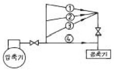
- ①과 같이 배관한다.
- ②와 같이 배관한다.
- ③과 같이 배관한다.
- ④와 같이 배관한다.
(정답률: 74%)
47. 냉각코일 주위 배관에 대한 설명이 옳지 않은 것은?
- 3방 밸브의 바이패스에는 글로브 밸브를 설치한다.
- 바이패스저항과 코일저항은 같게한다.
- 공기빼기를 용이하게 한다.
- 물은 코일의 위쪽 입구로부터 코일 아래쪽 출구로 통하도록 한다.
(정답률: 30%)
48. 보온재의 구비 조건 중 맞지 않는 것은?
- 열전도율이 클 것
- 내구성이 클 것
- 내열성이 클 것
- 흡습성이 적을 것
(정답률: 77%)
49. 경질염화비닐관의 특징 중 옳지 못한 것은?
- 내열성이 좋다.
- 전기절연성이 크다.
- 가공이 용이하다.
- 열팽창률이 크다.
(정답률: 59%)
50. 개별식(국소식)급탕방식의 장점 중 틀린 것은?
- 배관설비 거리가 짧고 배관 중 열손실이 적다.
- 급탕장소가 많은 경우 시설비가 싸다.
- 수시로 급탕하여 사용할 수 있다.
- 건물의 완성 후에도 급탕장소의 증설이 비교적 쉽다.
(정답률: 72%)
51. 냉각수 순환용 원심펌프 주변 배관 설치시 유의사항이 아닌 것은?
- 펌프 흡입부의 편류가 발생하지 않도록 펌프 흡입구 직관부 길이를 가능한 짧게 한다.
- 펌프 접속하는 배관의 하중이 직접 펌프로 전달되지 않도록 한다.
- 배관의 하단부에는 드레인 밸브를 설치한다.
- 펌프토출측 유속은 3.5m/s 이내가 되도록한다.
(정답률: 24%)
52. 다음 중 증기난방설비에 있어서 응축수탱크에 모아진 응축수를 펌프로 보일러에 환수시키는 환수방법은?
- 중력 환수식
- 기계 환수식
- 진공 환수식
- 지역 환수식
(정답률: 56%)
53. 배관지지에 대한 설명이 옳지 않은 것은?
- 배관의 보온을 위해 지지한다.
- 진동 충격에 대해 지지한다.
- 열팽창에 의한 배관계를 지지한다.
- 배관계 중량을 지지한다.
(정답률: 68%)
54. 관경 25A(내경 27.6mm)의 강관에 매분 30ℓ/min의 가스를 흐르게 할 때 유속은?
- 0.54 m/s
- 0.64 m/s
- 0.74 m/s
- 0.84 m/s
(정답률: 32%)
55. 다음에서 강관을 재질상으로 분류한 것이 아닌 것은?
- 탄소 강관
- 합금 강관
- 스테인레스 강관
- 전기 용접관
(정답률: 70%)
56. 증기배관 보온재료로 부적당한 것은?
- 로크울
- 글래스울
- 규조토
- 코르크
(정답률: 49%)
57. 관을 도중에 분기시킬 때 사용되는 관이 아닌 것은?
- 티이(T)
- 와이(Y)
- 크로스(cross)
- 엘보우(elbow)
(정답률: 70%)
58. 지하수와 수돗물을 동시에 공급하는 급수시스템을 채용하고 있는 어느 건물에서 반드시 수돗물을 사용하여야 하는 설비는?
- 보일러 급수배관
- 스프링클러배관
- 소변기 급수배관
- 청소싱크 급수배관
(정답률: 42%)
59. 급탕관과 반탕관내의 탕수의 온도차로 온수를 순환시키는 급탕방식은?
- 강제 순환식
- 즉시 탕비기에 의한 급탕식
- 중력 순환식
- 기수 혼합식
(정답률: 32%)
60. 저압가스배관의 가스유량 Q(m3/h)를 나타내는 식으로 올바른 것은? (단, D : 관경, L : 관길이, H : 압력손실,S : 가스비중) (문제 오류로 현재 복원중입니다. 보기 내용을 아시는 분들께서는 오류 신고를 통하여 보기 작성 부탁 드립니다. 정답은 가번입니다.)
- 복원중
- 복원중
- 복원중
- 복원중
(정답률: 42%)
4과목: 전기제어공학
61. 건물의 전기설비에 이용되는 교류 전동기에서 2단 속도형의 속도비에 해당되는 것은?
- 2:1
- 3:1
- 4:1
- 5:1
(정답률: 42%)
62. 맥동 주파수가 가장 많고 맥동률이 가장 적은 정류방식은?
- 단상반파정류
- 단상전파정류
- 3상반파정류
- 3상전파정류
(정답률: 67%)
63. AC 서보 전동기에 대한 설명으로 틀린 것은?
- 큰 회전력이 요구되지 않는 계에 사용되는 전동기이다.
- 고정자의 기준 권선에는 정전압을 인가하며, 제어권선에는 제어용 전압을 인가한다.
- 속도 회전력 특성을 선형화하고 제어전압을 입력으로, 회전자의 회전각을 출력으로 보았을 때 이 전동기의 전달함수는 미분요소와 2차요소의 직렬 결합으로 볼수 있다.
- 기준권선과 제어권선의 두 고정자 권선이 있으며, 90도의 위상차가 있는 2상 전압을 인가하여 회전자계를 만든다.
(정답률: 42%)
64. 연속식 압연기의 자동제어는?
- 추종제어
- 프로그래밍제어
- 비례제어
- 정치제어
(정답률: 35%)
65. 유도전동기의 기동방법 중 용량이 5kW 이하인 소용량 전동기에는 주로 어떤 기동법이 사용되는가?
- 전전압 기동법
- Y-△기동법
- 기동보상기법
- 리액터기동법
(정답률: 47%)
66. 오차의 크기와 오차가 발생하고 있는 시간에 둘러 쌓인 면적의 크기에 비례하여 조작부를 제어하는 것으로 OFF- SET를 소멸시켜 주는 동작은?
- 적분동작
- 미분동작
- 비례동작
- ON-OFF동작
(정답률: 29%)
67. 그림과 같은 논리회로와 동일한 것은?
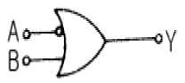
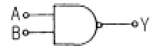
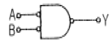
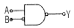
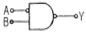
(정답률: 56%)
68. 그림과 같은 회로에 전압 100V를 가할 때 저항 10Ω에 흐르는 전류 Ⅰ1 은 몇 A 인가?
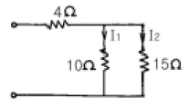
- 4
- 6
- 8
- 10
(정답률: 40%)
69. 그림과 같은 R-L-C 직렬회로에서 XL = XC (ωL=1/C)가 되는 것을 직렬공진이라 한다. 다음 중 직렬공진에 대한 설명이 잘못된 것은?
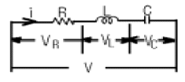
- 회로에 흐르는 전류는 최대가 된다.
- 회로에는 유효전력이 발생되지 않는다.
- 회로의 합성 임피던스가 최소가 된다.
- R 에 걸리는 전압 VR 이 공급전압 V 와 같게 된다.
(정답률: 45%)
70. 그림과 같은 블럭선도의 등가 합성전달함수는?
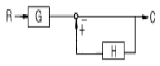
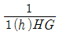
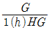
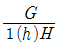
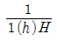
(정답률: 64%)
71. 공업 공정의 제어량을 제어하는 것은?
- 프로세스제어
- 프로그램제어
- 비율제어
- 정치제어
(정답률: 66%)
72. 60Hz인 전력선에 4극 발전기를 연결시켜 운전하고자 한다. 이 때 발전기의 회전수를 얼마로 해야 주파수의 변동을 일으키지 않는가?
- 20rps
- 30rps
- 60rps
- 120rps
(정답률: 24%)
73. 제어량을 어떤 일정한 목표값으로 유지하는 것을 목적으로 하는 제어법은?
- 추종제어
- 비율제어
- 정치제어
- 프로그램제어
(정답률: 67%)
74. 평형 상태인 브리지에서 L1 : L2 의 길이의 비율은 1 : 2이다. R = 20?일 때 저항 X 의 값은 몇 ?인가?
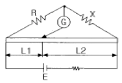
- 5
- 10
- 20
- 40
(정답률: 35%)
75. 1차 및 2차 정격전압이 같은 A, B 2대의 변압기가 있다. 그 용량 및 임피던스 강하가 A는 5kVA, 3%, B는 20kVA, 2%일 때 이것을 병렬운전하는 경우 부하를 분담하는 비는?
- 1:4
- 2:3
- 3:2
- 1:6
(정답률: 24%)
76. 그림과 같은 회로에서 해당되는 램프의 식으로 옳은 것은?
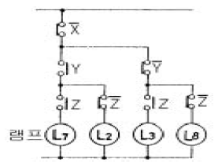
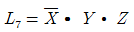
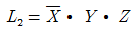
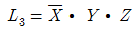
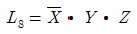
(정답률: 67%)
77. PLC(Programmable Logic Controller)로 구성 할 수 없는 것은?
- 타이머
- 카운터
- 연산장치
- 전자개폐기
(정답률: 51%)
78. 피드백(Feedback) 제어의 특징이 아닌 것은?
- 제어량의 값을 맞추기 위한 목표값이 있다.
- 입력측의 신호를 출력측으로 되돌려 준다.
- 제어신호의 전달 경로는 폐루프를 형성한다.
- 측정된 제어량이 목표치와 일치하도록 수정 동작을 한다.
(정답률: 51%)
79. 어떤 백열등에 200V 의 전압을 인가하고 전류를 측정하였더니 0.1A 이었다. 이 백열등의 소비전력은 몇 W 인가?
- 10
- 20
- 40
- 80
(정답률: 50%)
80. 다음과 같은 저항의 종류 중 가능한 큰 것이 좋은 것은?
- 접지저항
- 도체저항
- 절연저항
- 접촉저항
(정답률: 66%)